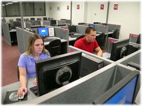

Creating tests for appropriate measurement of learning
We are trained in the art and science of assessment and all facets of test development and administration, with 20 years of experience at the local, state, and federal levels. Our trained measurement specialists can produce multimedia assessment instruments for high-stakes achievement, advancement, licensure, and certification.